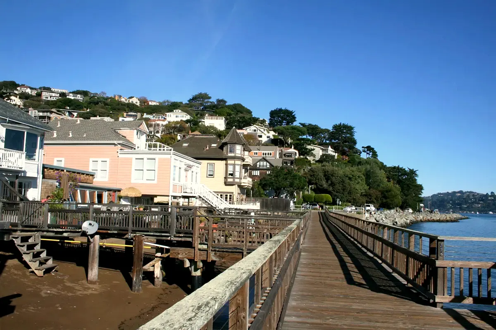

What is a jumbo cash-out refinance?
A jumbo cash-out refinance replaces your mortgage with a larger loan, above the FHFA conforming limit for your county, and pays you the difference in cash. It is available for homes in Hawaii and California through John Zialcita at Loan Factory.
NMLS #337891 · CA DRE #01727126 · Loan Factory, Inc. NMLS #320841
What is a jumbo cash-out refinance?
It is a cash-out refinance whose new loan amount is above the conforming limit. The CFPB describes a cash-out refinance as replacing your existing mortgage with a bigger mortgage and taking the difference in cash. FHFA calls a mortgage above the conforming loan limit a jumbo loan.
The limit is the loan amount, and it changes by county and by the number of units. Use the 2026 Hawaii and California county limits.
How is a cash-out refinance different from a rate-and-term refinance?
Both pay off the current mortgage and replace it. A rate-and-term refinance does not take extra principal out. A cash-out refinance does. The CFPB has used the name rate-and-term for non-cash-out refinances.
A jumbo rate-and-term refinance is explained on the jumbo refinance page. Either type is jumbo only when the new loan exceeds the county limit.
How is a cash-out refinance different from a HELOC?
A cash-out refinance becomes your new first mortgage. A HELOC is an additional line of credit and usually leaves the first mortgage in place.
The CFPB says cash-out refinance closing costs are generally higher, and that the new mortgage can take longer to pay off. A cash-out refinance may cost more or less than a HELOC depending on the rate, the fees, and how long you keep it. This page does not quote either product. See the CFPB comparison of loans similar to a HELOC.
What should you compare before taking cash out?
Compare the new rate, the term, the closing costs, and the new payment with the mortgage you have. A larger balance can raise the payment and stretch out the time you owe money on the house, even when the rate changes.
The CFPB says a refinance usually includes closing costs and fees, and that the home secures the loan. In its home-equity guide, the CFPB says lenders typically require you to keep at least 10 to 20 percent of the home value as equity, and that you cannot turn 100 percent of equity into cash. Jumbo programs set their own caps. Those caps are not published here.
When is a cash-out refinance jumbo in Hawaii or California?
When the new loan amount is above the 2026 FHFA limit for that county and unit count.
Hawaii, one-unit: $1,249,125 in Hawaii County, Honolulu County, and Kauai County; $1,299,500 in Maui County and Kalawao County. California, one-unit: $832,750 in baseline counties and up to $1,249,125 in the highest-cost counties. Full county table. State pages: Hawaii jumbo refinance and California jumbo refinance.
Who arranges these loans?
John Zialcita, NMLS #337891, California DRE broker license #01727126, through Loan Factory, Inc., NMLS #320841, at 2195 Tully Road, San Jose, CA 95122.
Call or text (415) 385-7409 or use the contact page. Confirm license status on NMLS Consumer Access. Licensing details.
Jumbo cash-out questions
What is a jumbo cash-out refinance?
It is a refinance that replaces your current mortgage with a larger mortgage, pays you the difference in cash, and is above the FHFA conforming loan limit for the county and unit count.
Does a cash-out refinance replace my current mortgage?
Yes. The CFPB describes a cash-out refinance as replacing the existing mortgage with a bigger mortgage. It is not a second mortgage. A second mortgage or home equity loan leaves the first mortgage in place.
Is a jumbo cash-out refinance the same as a HELOC?
No. A HELOC is a separate line of credit and usually leaves the first mortgage in place. A cash-out refinance pays off that mortgage and replaces it. The CFPB says cash-out closing costs are generally higher than a HELOC and that paying off the new mortgage can take longer.
Will a jumbo cash-out refinance lower the rate?
Not necessarily. Compare the new rate, the new term, and the closing costs with the loan you have. This page does not quote rates. The pricing tool on the rates page is not a commitment to lend.
Do I have to take cash out to refinance a jumbo loan?
No. A rate-and-term refinance can be jumbo if the new loan amount is above the county limit. Cash-out is optional.
What is the 2026 jumbo threshold in Honolulu?
For a one-unit property, $1,249,125. Hawaii County and Kauai County use the same one-unit figure. Maui County and Kalawao County are $1,299,500. Two- to four-unit limits are on the county limits page.
What is the 2026 jumbo threshold in San Francisco?
For a one-unit property, $1,249,125. The same one-unit ceiling applies in Alameda, Contra Costa, Los Angeles, Marin, Orange, San Benito, San Mateo, Santa Clara, and Santa Cruz. Other California counties are lower.
Can I cash out all of my equity?
The CFPB says a cash-out refinance does not convert 100 percent of equity to cash, and that lenders typically require you to keep at least 10 to 20 percent of the home value as equity. Jumbo lenders set their own maximums. Those program limits are not listed on this page.
Equal Housing Opportunity. This is not a commitment to lend. Programs, rates, terms and conditions are subject to change without notice and subject to credit and property approval. Loan Factory, Inc. is a mortgage broker, not a direct lender.
Sources: CFPB, loans similar to a HELOC; CFPB, mortgage key terms; CFPB, cash-out and rate-and-term refinances; CFPB, Using home equity to meet financial needs; FHFA conforming loan limits; FHFA, November 25, 2025.